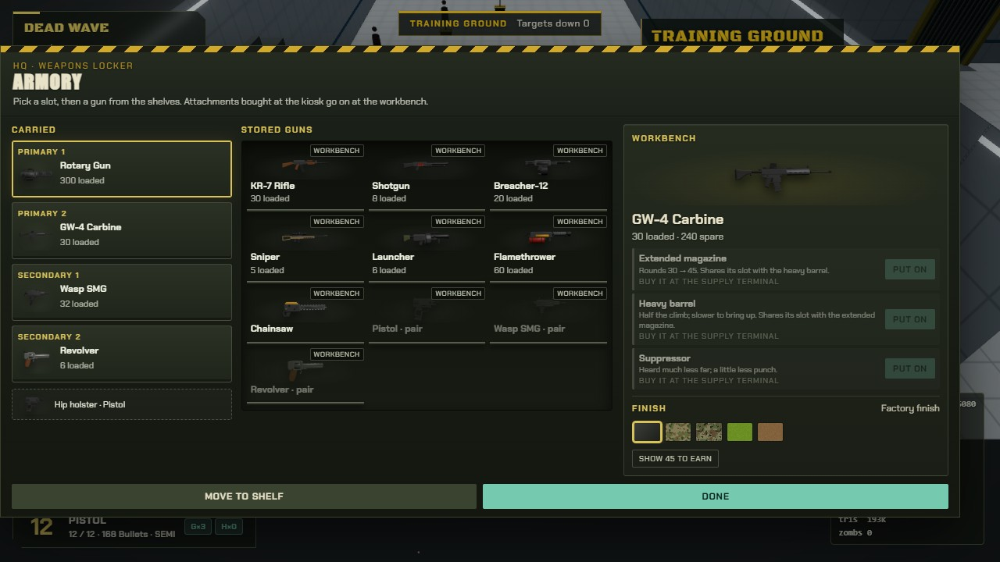
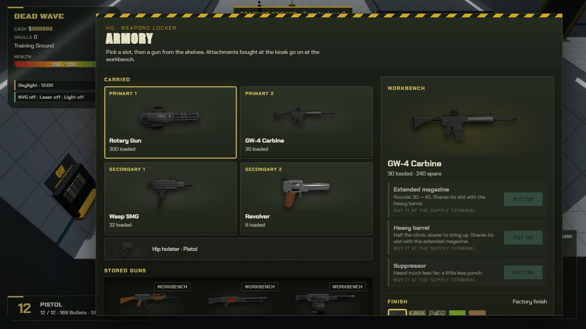
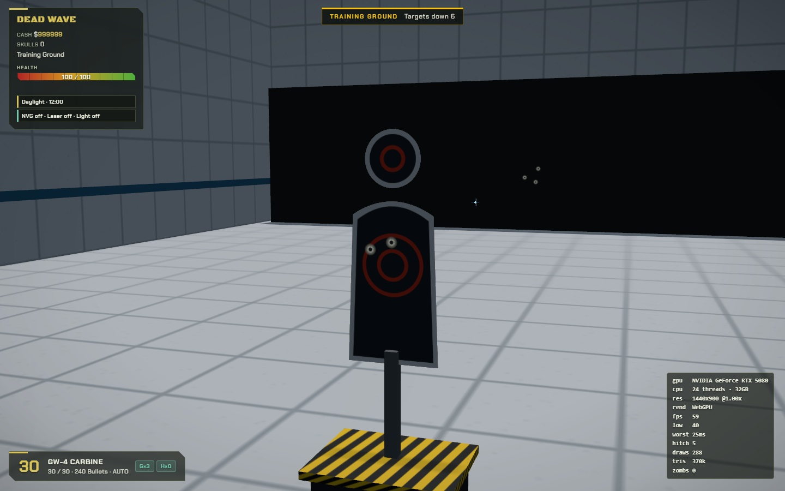
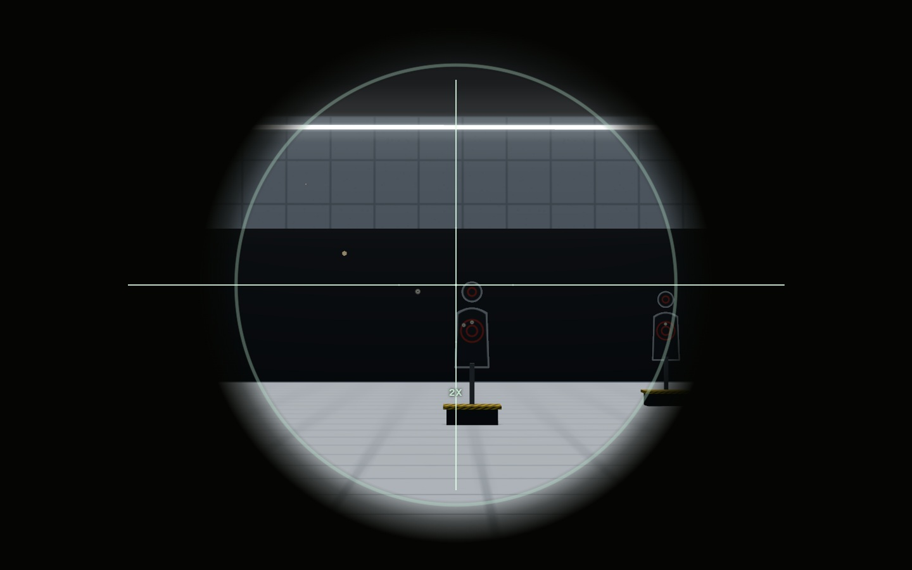

Armory and range refinements
Carried weapons, the locker, and the workbench now share one compact work surface. The complete arsenal and all twelve weapon workbenches fit at 1280 × 720 without scrolling. Small phone screens retain scrolling for readable controls.

Previous armory layout

The weapon flashlight goes dark while unarmed. Drawing the weapon restores its chosen light setting.
Range hits
Rounds now reach all five targets from the firing line. Bullet holes remain on targets and the backstop after the sparks fade.

Before impact marks
Sniper scope
Raising the scope with a stationary cursor near the top edge no longer starts an upward pan. The scope also preserves the selected point while the rifle rises. Default WebGPU range checks now pass after the crew warm-up fix. Bullet-hole shaders are prepared before play, with no impact shader or pipeline builds on their first use.

See the fitted marine straps and bandoliers